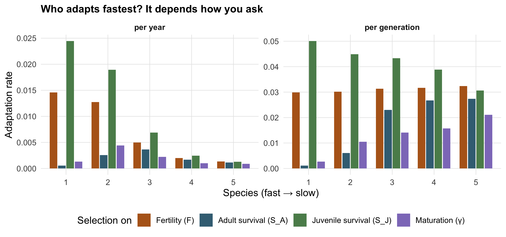
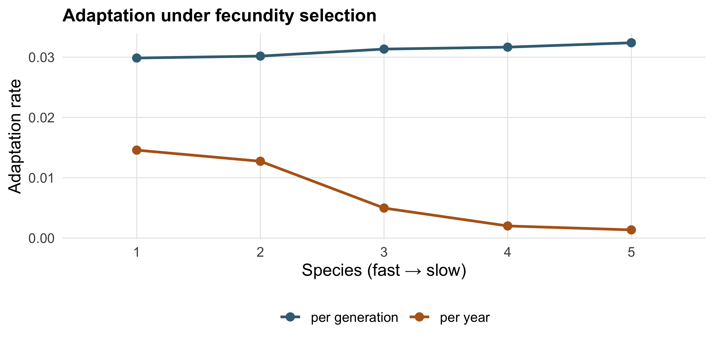

project_one <- function(sp, rate) {
MPM(
h2 = 0.2, Vp = 1, Beta = 0.15,
Fe = species$F[sp], SA = species$SA[sp], SJ = species$SJ[sp],
S0 = species$SJ[sp], Y = species$gamma[sp],
selectedrate = rate
)
}
res <- expand_grid(sp = 1:5, rate = c("Fe", "SJ", "SA", "Y")) |>
mutate(
run = map2(sp, rate, project_one),
per_year = map_dbl(run, "V"), # RAT: adaptation per year
Tgen = map_dbl(run, "T_GEN"),
per_gen = per_year * Tgen # RAG: adaptation per generation
) |>
select(-run) |>
mutate(sp = factor(sp))4 The slow–fast continuum
NoteWhat you’ll be able to do
Run the model across five species spanning the slow–fast life-history continuum, and show why “which species adapts fastest?” has no single answer — it flips depending on whether you measure adaptation per year or per generation.
4.1 Five species, one life cycle
The five species differ only in the four numbers that fill the Leslie matrix. Sorted by generation time, they range from fast (a grass) to slow (an albatross):
species |>
transmute(Species = species, `Life history` = label,
`Fertility F` = F, `Adult surv. SA` = SA, `Juv. surv. SJ` = SJ,
`Maturation γ` = gamma, `Generation time T` = Tgen)# A tibble: 5 × 7
Species `Life history` `Fertility F` `Adult surv. SA` `Juv. surv. SJ`
<fct> <chr> <dbl> <dbl> <dbl>
1 1 Grass / insect 11.0 0.0365 0.0965
2 2 Small mammal / bird 5.00 0.2 0.25
3 3 Deer 0.999 0.8 0.385
4 4 Primate 0.300 0.93 0.505
5 5 Albatross / whale 0.229 0.95 0.8
# ℹ 2 more variables: `Maturation γ` <dbl>, `Generation time T` <dbl>4.2 Project every species under every selection scenario
We sweep all \(5 \times 4 = 20\) combinations. The pattern is the same helper as before, mapped over a grid:
4.3 The same result, two definitions
Now the heart of the matter. We plot the realised adaptation rate two ways — per year and per generation — and the story changes completely.
res |>
select(sp, rate, `per year` = per_year, `per generation` = per_gen) |>
pivot_longer(c(`per year`, `per generation`),
names_to = "unit", values_to = "rate_value") |>
mutate(unit = factor(unit, levels = c("per year", "per generation"))) |>
ggplot(aes(sp, rate_value, fill = rate)) +
geom_col(position = position_dodge2(), width = 0.8) +
facet_wrap(~unit, scales = "free_y") +
scale_fill_manual(values = vital_pal, labels = vital_lab, name = "Selection on") +
labs(x = "Species (fast → slow)", y = "Adaptation rate",
title = "Who adapts fastest? It depends how you ask")
Read the two panels against each other:
- Per year (left): adaptation often slows from fast to slow species when selection acts on fecundity or juvenile survival. This pattern is not universal, however: when selection acts on maturation or adult survival, intermediate life histories can show the highest adaptation rates.
- Per generation (right): the ranking changes again. Adaptation decreases along the slow–fast continuum when selection acts on juvenile survival, remains constant across species when selection acts on fecundity, and increases with generation time when selection acts on maturation or adult survival.
4.4 The cleanest demonstration: fecundity
Zoom in on selection acting on fecundity alone:
res |>
filter(rate == "Fe") |>
select(sp, `per year` = per_year, `per generation` = per_gen) |>
pivot_longer(-sp, names_to = "unit", values_to = "rate_value") |>
ggplot(aes(sp, rate_value, group = unit, colour = unit)) +
geom_line(linewidth = 0.9) + geom_point(size = 2.4) +
scale_colour_manual(values = c("per year" = "#B5651D", "per generation" = "#3E6E83"),
name = NULL) +
labs(x = "Species (fast → slow)", y = "Adaptation rate",
title = "Adaptation under fecundity selection")
This pattern is predicted by the theory, not just by the simulation. When selection acts on fecundity, the adaptation rate per generation reduces to \(h^2 V_P\,\beta\), which contains no life-history term. Theoretically, all species should therefore adapt at the same rate per generation. Small deviations visible in the numerical results likely reflect discretisation or numerical approximation. Per year, adaptation then declines with generation time because the same evolutionary change is spread across more calendar years. We derive this result and compare it with the numerical model in Chapter 5.
TipKey idea — the punchline
There is no universal answer to “which species adapts fastest.” It depends on (1) the species’ life cycle, (2) which vital rate selection targets, and (3) how you define adaptation — per year or per generation, and in what units of selection. The original study makes exactly this point: don’t assume an answer from intuition; model the rate with the definition that matters to your question, and read off the number (Van de Walle et al. 2025).
ImportantYour turn
Your prediction from Chapter 1 — grass versus albatross — was about adaptation per year. Look at the left panel: were you right? Now look at the right panel. Did the albatross “lose” on both definitions, or only one? Which definition would a conservation manager planning over calendar years care about, and which would a quantitative geneticist reach for?
CautionDiscussion — there isn’t one right answer
A manager allocating effort over the next few decades thinks in years, so the per-year panel is their world: fast species adapt more in the time available. A quantitative geneticist studying the genetic response thinks in generations, where the breeder’s equation lives — and there the slow albatross is far from hopeless. Both are correct; they are answering different questions.
You have now done the core of the workshop: you can run the model, read it, and reason about its central result. The next part opens the engine for those who want it.